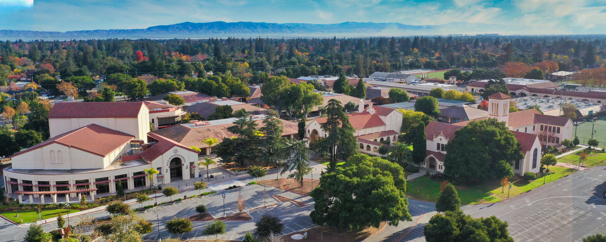

Palo Alto High School's student-run community for building with AI. An organization of, for, and by Paly students across coding, startups, and research.
Scroll
Paly AI Labs
We help Paly students build at the frontier of AI.
-
A hands-on group of students shipping real AI projects, from first prompts to working apps, with mentorship and the tools to go further.
-
Talks and panels with founders, engineers, and researchers working at the frontier, brought straight to Room 549.
Past speakers -
A student-led team at Palo Alto High School, officially Paly Superintelligence Lab, building the next generation of AI builders and founders.
-
Our kickoff, the AI Coding Basics workshop, and student projects ranging from agents to apps and early startups.
Get Involved